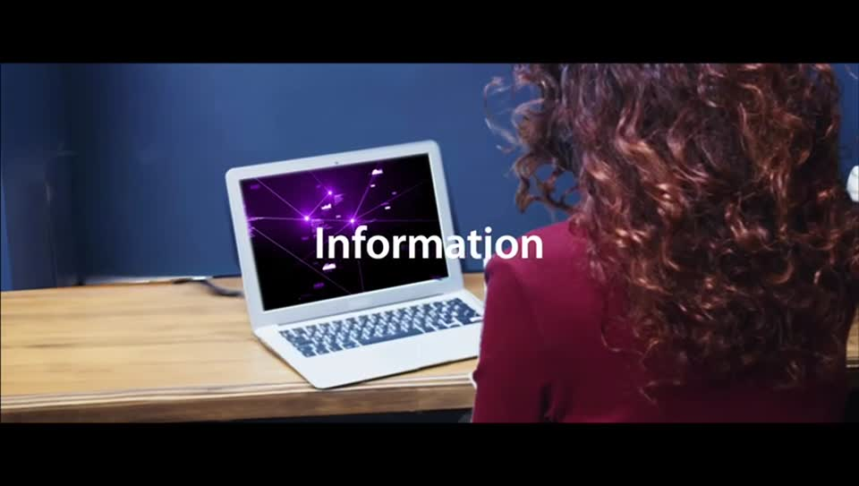
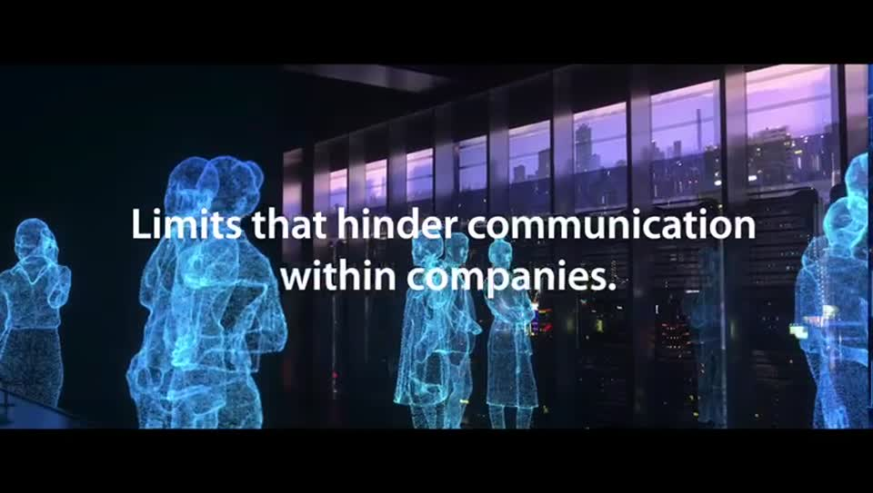

Overview
Organize a product and brand message into a short piece that is easy to follow. Shot order, on-screen text, voiceover and sound need to work together, giving each information point a clear moment.
What I worked on
The featured piece includes concept and script, visual sourcing, editing, animated text, voiceover and audio assembly. During the Vosyn internship, I also worked on footage selection, subtitles, audio treatment and version revisions with content and brand collaborators.
Design decisions
01 / Establish a message before assembling shots
Use the script and intended audience to decide what the piece needs to communicate. Then organize footage, music and key information around that structure.
02 / Balance image, text and sound
Build rhythm through shot length and transitions, supporting the message with readable subtitles, moving text and audio rather than asking one layer to explain everything.
03 / Treat publishing as part of the process
For the independent Bilibili account, I manage research, scripting, titles, thumbnails, editing, publishing and review. Views, interactions and comments inform adjustments to the opening, information density and pace.
Work & evidence
These are actual frames from the featured film. They are presented as examples of image and text treatment, alongside the complete video.


Reflection
The next useful portfolio addition is a documented edit comparison: an earlier cut, the feedback it received and the resulting change. This would connect the finished output with specific editorial decisions.